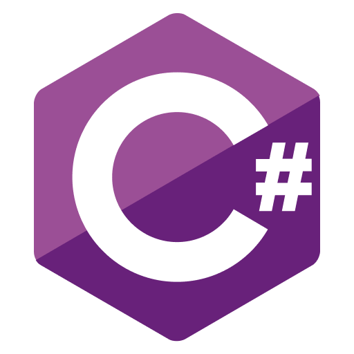

C# (1998)
C# é uma linguagem de programação moderna, orientada a objetos e fortemente tipada. Ela foi criada pela Microsoft e lançada em 2000 como parte da plataforma .NET. O objetivo principal por trás da criação do C# era oferecer uma linguagem que fosse fácil de usar, eficiente e adequada para o desenvolvimento de uma ampla variedade de aplicativos para Windows.

O C# foi desenvolvido levando em consideração as melhores práticas de outras linguagens, uma das principais motivações para a criação do C# foi fornecer uma linguagem que permitisse o desenvolvimento rápido de aplicativos para o ambiente Windows. Com o C#, os desenvolvedores podem criar aplicativos web, serviços, jogos e muito mais, todos integrados ao ecossistema Windows.
Atividade desenvolvida como extensão no projeto
PACEX/Mundo Tech do curso de análise e Desenvolvimento de Sistemas
Unipar - Cascavel